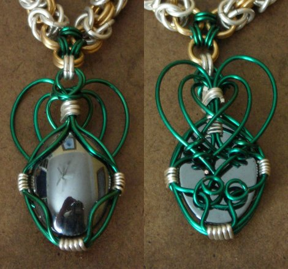
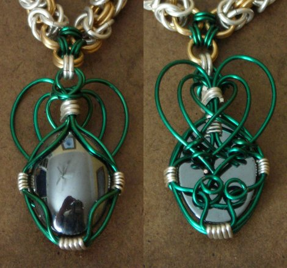

Rings:
20 ga 7/64" ID, Kelly Green EC
18 ga 5/32" ID, Silver- and Gold-Plate
Byzantine with some tiny Japanese elements.
18 ga 5/32" ID, Silver- and Gold-Plate
Byzantine with some tiny Japanese elements.
Pendant is a hematite cabochon wrapped in 20 ga Kelly Green EC, with
bits of sterling silver wire for the binding. Also, six beads
(probably hematite as well, although they are magnetic -- another issue
that the TRL members helped to clarify).
Celtic Royalty necklace
Many thanks to the excellent members of the TRL Forum community for
their help on this necklace. First, for pointing me toward a
selection of tutorials on setting cabochons using wire, and second for
helping me to name this piece once I had finished it. There
was a lot of concensus that it looked Celtic, so that's the theme I
went with.
This necklace is really not my typical style, with its generous use of wire wrap and minimalist chain elements. I must confess that this wasn't a planned revolution; it merely resulted from the fact that I had virtually no precious metals on hand at the time, so I compensated with beads and enameled copper.

This necklace is really not my typical style, with its generous use of wire wrap and minimalist chain elements. I must confess that this wasn't a planned revolution; it merely resulted from the fact that I had virtually no precious metals on hand at the time, so I compensated with beads and enameled copper.
